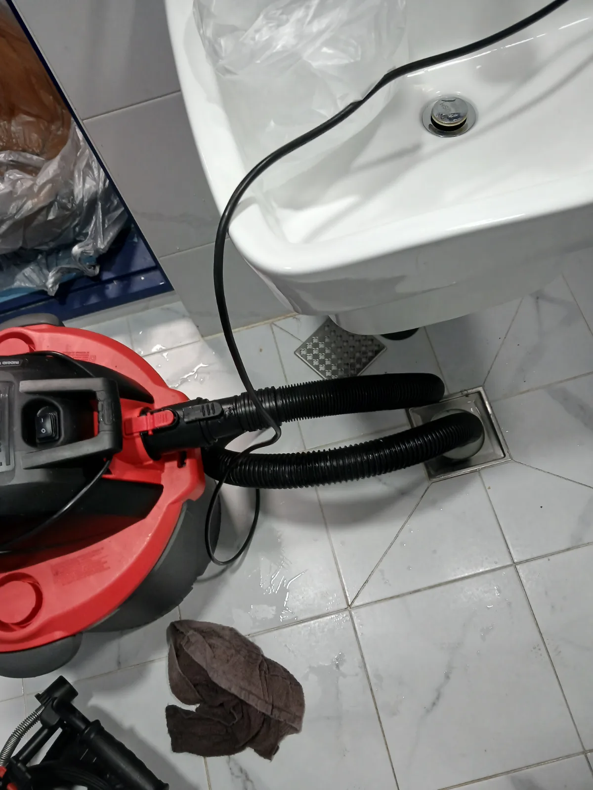

강남구 신사동 하수구막힘, 현장 도착 후 진단
예약 손님 입실 시간이 가까워지고 있어 빠른 작업이 필요한 상황이었지만, 무작정 관통 작업부터 진행하지 않고 먼저 막힘 원인과 배관 상태를 확인했습니다.
하수구에 설치된 트랩을 분리한 뒤 배관 내시경을 투입해 내부를 점검했습니다. 사진에서도 확인되듯 내시경 카메라는 약 3.2m 구간까지 진입했고, 배관 내부에 오염물과 이물질이 남아 있는 상태를 확인할 수 있었습니다.
강남구 신사동 하수구막힘처럼 여러 사람이 사용하는 숙박 공간에서는 단순히 물길만 순간적으로 확보하는 것보다 배관 내부 상태와 구조를 함께 확인하는 것이 중요합니다.
신라건축설비는 현장 증상만 보고 일률적으로 같은 작업을 진행하지 않고, 배관 구조와 막힘 상태에 따라 내시경·석션·관통·샤프트·고압세척 등 필요한 장비와 공법을 선택해 작업합니다.
1단계: 증상 확인과 필요한 장비 작업
먼저 악취 차단을 위해 설치돼 있던 트랩을 분리해 하수구 입구와 배관 연결 구조를 확인했습니다.
이후 배관 내시경을 투입해 눈으로 확인하기 어려운 내부 상태를 점검했습니다. 약 3.2m 구간까지 카메라를 진입시키며 배관 내부의 오염 상태와 이물질 잔존 여부를 확인했습니다.
트랩은 하수구 냄새와 벌레 유입을 줄이는 데 도움이 되지만, 구조와 설치 상태에 따라 머리카락이나 생활 찌꺼기가 걸리는 지점이 생길 수 있으므로 배수 상태와 함께 점검해야 합니다.

2단계: 원인 구간 처리와 정상 작동 확인
내시경 점검 후 전문 석션 장비를 하수구 배관에 연결해 내부 오염물을 강하게 흡입했습니다.
석션 작업 과정에서 머리카락과 여러 생활 찌꺼기, 상당량의 탁한 오염수가 외부로 회수됐습니다.
이번 작업은 막힌 이물질을 배관 깊숙한 곳으로 밀어 넣는 것이 아니라 석션을 이용해 내부 오염물을 직접 외부로 제거하는 방식으로 진행했습니다.
오염물 제거 후 다시 물을 충분히 흘려보내 배수 상태를 확인했고, 예약 손님 입실 전에 화장실을 정상적으로 사용할 수 있는 상태까지 통수 여부를 확인한 뒤 작업을 마무리했습니다.

작업 결과와 재발 방지 안내
이번 강남구 신사동 하수구막힘은 에어비앤비 숙소의 악취 관리를 위해 설치했던 여러 트랩 구조와 배관 내부에 축적된 머리카락·생활 이물질이 함께 배수 흐름을 방해했던 사례였습니다.
숙박시설처럼 이용자가 자주 바뀌는 공간에서는 하수구 냄새 관리도 중요하지만 배수 상태 역시 함께 관리해야 합니다. 트랩을 여러 개 설치하는 것보다 배관 구조에 맞는 제품을 사용하고, 머리카락과 찌꺼기가 쌓이지 않았는지 주기적으로 점검하는 것이 좋습니다.
이번 현장에서는 단순히 급하게 물길만 확보하지 않고 트랩 점검 → 배관 내시경 진단 → 전문 석션 → 오염수와 이물질 회수 → 최종 통수 확인 순서로 작업했습니다.
신라건축설비는 서울·경기 지역에서 변기막힘·싱크대막힘·하수구막힘을 전문적으로 처리하며, 숙박시설이나 영업장처럼 빠른 정상화가 필요한 현장에도 신속하게 대응합니다. 현장 상태에 따라 석션·관통·배관 내시경·샤프트·고압세척 등 적합한 장비를 선택하고, 단순 생활 막힘부터 공용배관·오수관과 고난도 배관 문제까지 현장 상황에 맞춰 대응하고 있습니다.
최종 조치: 화장실 바닥 하수구의 트랩을 분리해 배수 구조를 확인한 뒤 배관 내시경을 투입해 내부 상태를 점검했습니다. 이후 전문 석션 장비로 배관 내부에 쌓인 오염수와 이물질을 외부로 직접 회수하고, 작업 후 다시 물을 흘려 정상적인 통수 상태를 확인했습니다.
현장 방문 전 확인하는 비용과 작업 범위
신라건축설비는 현장 증상과 배관 구조를 확인한 뒤 필요한 작업과 예상 비용을 안내합니다. 단순 관통으로 해결되는지, 배관내시경·석션·고압세척 또는 추가 장비가 필요한지는 현장 상태에 따라 달라집니다. 출장비와 야간 작업비, 추가 장비 비용이 발생할 수 있는 경우 작업 전에 먼저 설명하고 동의를 받은 범위에서 진행합니다.
업체를 선택할 때 확인할 사항
무조건적인 ‘0원’ 표현보다 실제 작업 범위, 추가 비용 조건, 사용 장비와 사후 대응 기준을 확인하는 것이 중요합니다. 해결되지 않았을 때의 비용 기준과 작업 후 동일 증상 발생 시 점검 범위를 사전에 문의해두면 불필요한 분쟁을 줄일 수 있습니다.
강남구 하수구막힘 자주 묻는 질문
하수구막힘은 왜 반복되나요?
강남구 신사동 현장처럼 강남구 신사동의 에어비앤비 숙소에서 화장실 하수구 물 빠짐이 원활하지 않다는 긴급 요청이 들어왔습니다.숙소로 사용하는 공간이다 보니 평소에도 하수구 냄새에 신경을 많이 쓰고 있었고, 악취 차단을 위해 여러 곳에 트랩을 설치해 관리하고 있던 현장이었습니다.문제는 곧 예약 손님이 입실할 예정이었다는 점입니다. 화장실 하수구 배수가 불량한 상태로 손님을 받을 수 없는 상황이었기 때문에 입실 전까지 원인을 확인하고 정상적으로 사용할 수 있도록 빠른 조치가 필요했습니다. 증상은 원인이 현장마다 다를 수 있습니다. 배관 내부 기름 슬러지·생활 오염물·스케일이 충분히 제거되지 않았거나 오수관·공용배관 구간에 문제가 있으면 반복될 수 있습니다. 재발 시 막힌 위치와 배관 상태를 함께 확인합니다.
하수구가 역류하거나 물이 안 내려가면 하수구뚫는업체를 불러야 하나요?
바닥 배수구가 역류하거나 여러 배수구에서 동시에 물이 빠지지 않으면 단순 배수구 막힘보다 깊은 배관이나 공용배관 문제일 수 있습니다. 전문 장비로 원인 구간을 확인하는 것이 좋습니다.
여러 배수구가 동시에 막히면 공용배관이나 오수관 문제인가요?
동시에 여러 곳에서 배수 불량과 역류가 발생하면 메인배관·오수관·공용배관을 의심할 수 있지만 건물 구조마다 다릅니다. 배관내시경과 현장 진단으로 구간을 구분합니다.
하수구뚫는업체는 어떤 장비로 작업하나요?
현장에 따라 샤프트, 석션, 배관내시경, 고압세척 장비 등을 사용합니다. 단순 관통이 필요한지 배관 내부 세척까지 필요한지는 오염 상태와 막힘 원인에 따라 판단합니다.
하수구 고압세척은 언제 필요한가요?
기름 슬러지나 배관 내부 오염이 넓게 쌓여 반복 막힘이 생기는 경우 고압세척이 효과적일 수 있습니다. 모든 하수구막힘에 고압세척을 적용하는 것은 아니며 먼저 배관 상태를 확인합니다.
하수구막힘 비용은 어떻게 정해지나요?
막힌 위치, 배관 길이와 구경, 공용배관 여부, 내시경·샤프트·고압세척 등 장비 투입 범위에 따라 달라집니다. 추가 작업이 필요한 경우 진행 전에 범위와 비용을 안내합니다.
하수구막힘 서울·경기 출동지역
신라건축설비는 강남구 신사동 현장을 포함해 서울 25개 구와 경기도 31개 시·군의 배관 문제를 상담합니다. 현장 거리와 기사 배정 상황에 따라 출동 가능 여부를 먼저 안내드립니다.
서울 전 지역
강남구 · 강동구 · 강북구 · 강서구 · 관악구 · 광진구 · 구로구 · 금천구 · 노원구 · 도봉구 · 동대문구 · 동작구 · 마포구 · 서대문구 · 서초구 · 성동구 · 성북구 · 송파구 · 양천구 · 영등포구 · 용산구 · 은평구 · 종로구 · 중구 · 중랑구
경기도 주요 출동지역
수원시 · 용인시 · 고양시 · 화성시 · 성남시 · 부천시 · 남양주시 · 안산시 · 평택시 · 안양시 · 시흥시 · 파주시 · 김포시 · 의정부시 · 광주시 · 하남시 · 광명시 · 군포시 · 양주시 · 오산시 · 이천시 · 안성시 · 구리시 · 의왕시 · 포천시 · 양평군 · 여주시 · 동두천시 · 과천시 · 가평군 · 연천군